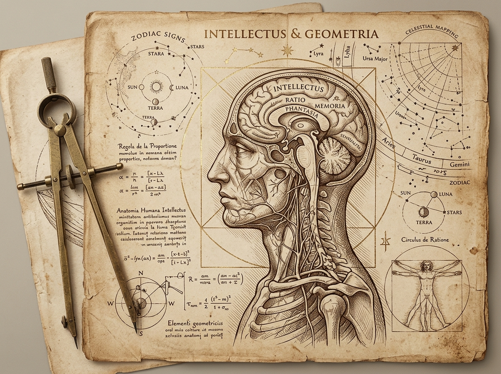

Dinamai dari peneliti James Flynn, fenomena ini menggambarkan kenaikan skor tes IQ di banyak negara selama abad ke-20—sering diringkas sekitar +3 poin setiap 10 tahun, meskipun besar kenaikannya berbeda menurut negara, periode, dan jenis tes.
Masyarakat semakin terbiasa membaca, berhitung, dan menalar logika abstrak sejak usia dini di bangku sekolah.
Pekerjaan manusia bergeser dari sekadar tenaga fisik ke tugas analitis, perencanaan, dan pemecahan masalah.
Skor naik bukan karena genetika berubah, melainkan karena lingkungan sehari-hari menuntut kita untuk terus berpikir mandiri.

Namun setelah seabad grafik ini terus menanjak, sejumlah data kohort modern menunjukkan laju kenaikan ini mulai melambat—bahkan berbalik menurun pada generasi muda.
736.808 pria Norwegia, kohort kelahiran 1962–1991
Nomor telepon, jadwal harian, arah jalan, sampai informasi umum. Banyak hal yang dulu kita simpan di kepala kini lebih sering kita titipkan ke perangkat saku.
Dulu dihafal di luar kepala, kini otomatis tersimpan di daftar kontak.
Dulu dicatat & diingat mandiri, kini menunggu alarm kalender berbunyi.
Dulu membaca tanda jalan; kini banyak perjalanan dipandu suara peta digital.
Dulu dipelajari & disimpan di memori, kini tinggal dipanggil mesin pencari.
AI bisa memberi jawaban instan dalam hitungan detik. Tetapi langsung menerima jawaban berbeda rasanya dengan benar-benar memahami dan menguasai ilmunya sendiri.
Balon mengusulkan bahwa penggunaan layar berlebihan, konsumsi konten singkat, dan ketergantungan pada jawaban instan mungkin ikut mengurangi latihan kognitif. Namun, hubungan sebab-akibatnya belum dapat dipastikan dari data yang tersedia.
Editorial Balon menawarkan beberapa langkah praktis untuk menjaga keterlibatan kognitif secara sadar dan bertahap:
Coba ingat atau susun jawaban awal sendiri sebelum membuka HP atau meminta bantuan AI.
Latih kembali daya fokus dengan membaca buku fisik, artikel panjang, atau tulisan mendalam.
Gunakan AI sebagai alat bantu cek di akhir, bukan pengganti proses berpikir di awal.
Sediakan waktu bebas gawai setiap hari dan perkuat interaksi langsung di dunia nyata.
Teknologi hadir untuk membantu memudahkan hidup kita. Tetapi daya pikir, ketajaman otak, dan kemampuan fokus adalah kemampuan berharga yang tetap perlu kita latih sendiri setiap hari.
Memisahkan hasil penelitian, interpretasi editorial, dan sintesis praktis presentasi.
James Flynn mendokumentasikan kenaikan skor tes IQ selama abad ke-20. Salah satu penjelasan yang ia ajukan adalah perubahan lingkungan kognitif—termasuk pendidikan yang makin menuntut penalaran abstrak— bukan perubahan genetik yang cepat.
Bratsberg dan Rogeberg menunjukkan bahwa kenaikan, titik balik, dan penurunan skor dapat ditemukan di antara saudara kandung dalam keluarga yang sama. Ini memperkuat peran lingkungan dan melemahkan penjelasan berbasis perubahan komposisi genetik, tetapi studi tersebut tidak menetapkan teknologi, pola membaca, atau media tertentu sebagai penyebab langsung.
Richard Balon menghubungkan kemudahan teknologi dengan kemungkinan berkurangnya keterlibatan kognitif. Namun, ia juga menyatakan bahwa data saat ini belum cukup untuk memastikan pembalikan Efek Flynn disebabkan oleh penggunaan smartphone, AI, atau penurunan nilai pendidikan.
Dalam empat eksperimen, peserta cenderung lebih sulit mengingat informasi yang mereka harapkan tetap tersedia di komputer, tetapi lebih baik mengingat di mana informasi itu tersimpan. Temuan ini mendukung konsep memori transaktif, bukan berarti otak sepenuhnya berhenti menyimpan fakta.
Socrates mengkhawatirkan penemuan tulisan akan “menciptakan kelupaan dalam jiwa manusia karena mereka berhenti melatih ingatan batinnya dan bergantung pada tanda dari luar.”
HASIL SEJARAH: Tulisan menjadi fondasi peradaban manusia dan tidak mematikan nalar lisan.Para cendekiawan dan rohaniwan Eropa cemas bahwa perbanyakan buku massal akan memicu “kebingungan informasi” (*information overload*) dan membuat orang membaca secara dangkal tanpa bimbingan otoritas.
HASIL SEJARAH: Memicu Abad Pencerahan (Enlightenment) dan revolusi sains modern.Kalkulator elektronik sempat dilarang di kelas karena dikhawatirkan “membuat siswa tidak bisa lagi berhitung dasar di kepala”.
HASIL SEJARAH: Mengotomasi hitungan rutin sehingga matematikawan bisa fokus pada pemecahan teori tingkat tinggi.Kekhawatiran bahwa budaya skimming di web mengikis sirkuit konsentrasi mendalam (*deep linear reading*), didukung temuan The Google Effect di jurnal Science.
HASIL SEJARAH: Manusia beralih ke penyimpanan memori eksternal (transactive memory).Pertanyaan Utama Zaman Ini: AI generatif bukan hanya mencari informasi, tetapi dapat menyusun argumen dan sintesis. Belum ada bukti bahwa hal ini menjelaskan pembalikan Efek Flynn, tetapi risikonya layak diuji dan dikelola dengan penggunaan yang sadar.
PESAN KUNCI: Gunakan kemudahan untuk akselerasi, jangan serahkan kapasitas berpikir mandiri.Sintesis praktis presentasi untuk menggunakan AI sebagai alat pengungkit nalar (*cognitive leverage*):
Pola penggunaan yang berisiko mengurangi keterlibatan berpikir mandiri: